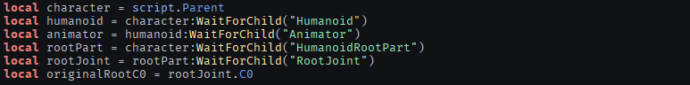
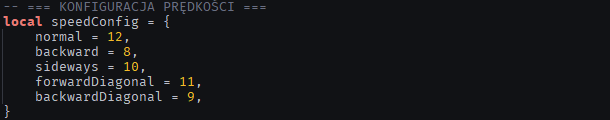
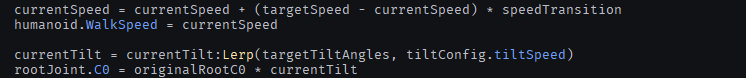
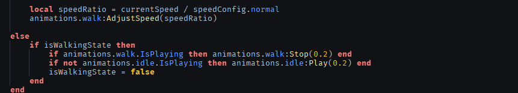
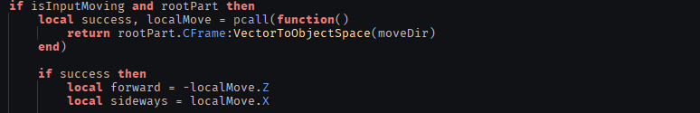
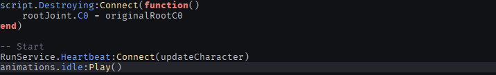

Co robi ten skrypt?
Skrypt zarządza animacjami i ruchem postaci gracza w Roblox Studio. Zastępuje domyślny system animacji własnym, który dostosowuje prędkość chodzenia i pochylenie postaci w zależności od kierunku ruchu.
Inicjalizacja
Na początku skrypt pobiera kluczowe elementy postaci: Humanoid, Animator oraz HumanoidRootPart. Następnie usuwa domyślny skrypt Animate Robloxa i zatrzymuje wszystkie aktywne animacje, przejmując pełną kontrolę.

Konfiguracja prędkości
Skrypt definiuje różne wartości prędkości zależnie od kierunku: do przodu, do tyłu, na boki oraz wartości pośrednie dla ruchów po skosie. Przejście między prędkościami jest płynne.

Pochylenie postaci
Skrypt dynamicznie oblicza kąt nachylenia tułowia na podstawie kierunku ruchu. Dzięki manipulacji złączem RootJoint, postać realistycznie reaguje na siłę odśrodkową i bezwładność, wychylając się w stronę ruchu. Wszystkie przejścia kątowe są wygładzane funkcją Lerp, co zapobiega szarpnięciom.

Zarządzanie Animacjami
System w pełni zastępuje domyślny moduł animacji Robloxa. Skrypt inteligentnie przełącza się między stanami Idle (odpoczynek) a Walk (ruch). Dodatkowo, tempo odtwarzania animacji chodzenia jest dynamicznie skalowane, im szybciej postać się porusza, tym szybciej przebiera nogami, co eliminuje efekt ślizgania się po podłożu.

Logika Kierunkowa
Wykorzystując zaawansowaną matematykę wektorów (VectorToObjectSpace), skrypt rozpoznaje precyzyjny kierunek poruszania się względem orientacji postaci. Pozwala to na unikalne zachowania, takie jak spowolnienie ruchu przy chodzeniu tyłem oraz specyficzne pochylenia przy biegach diagonalnych (na ukos).

Finał i Start Systemu
Ta część kodu dba o to, aby postać wróciła do swojej naturalnej postawy po usunięciu skryptu oraz aktywuje system w czasie rzeczywistym. Dzięki zdarzeniu Heartbeat, obliczenia są wykonywane w każdej klatce obrazu, co gwarantuje najwyższą płynność ruchu.
